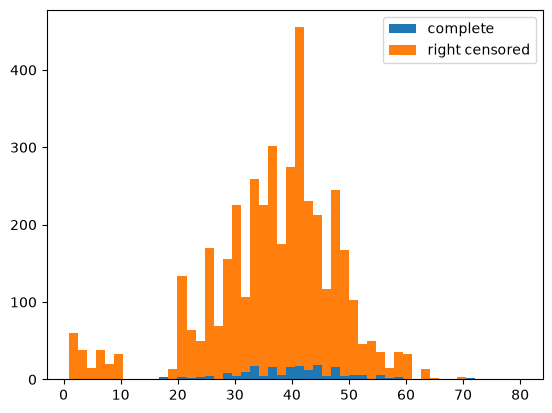
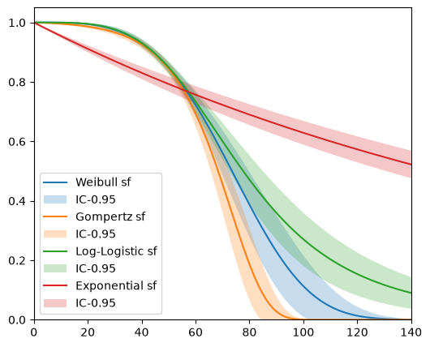
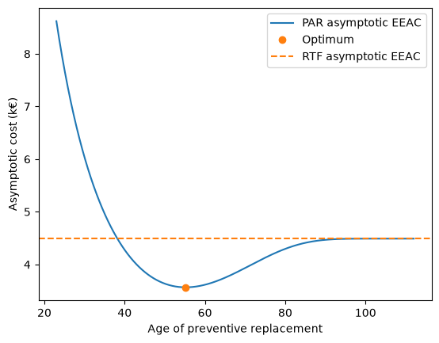
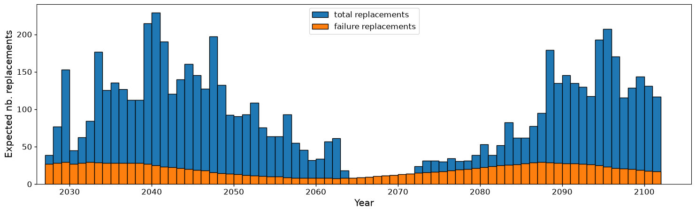

Data collection#
[1]:
from relife.datasets import load_circuit_breaker
[2]:
import pandas as pd
lifetime_dataset = load_circuit_breaker()
display(lifetime_dataset)
array([(34., True, 33.), (28., True, 27.), (12., True, 11.), ...,
(42., False, 31.), (42., False, 31.), (37., False, 26.)],
shape=(4204,), dtype=[('time', '<f8'), ('event', '?'), ('entry', '<f8')])
Datasets are Numpy structured arrays. Here, the array has 3 fields : time (float), event (bool) and entry (float).
[3]:
import matplotlib.pyplot as plt
event = lifetime_dataset["event"]
plt.hist(
[lifetime_dataset["time"][event == True], lifetime_dataset["time"][event == False]],
bins=50,
histtype="barstacked",
label=["complete", "right censored"],
)
plt.legend()
plt.show()

Lifetime model estimation#
We want to estimate the probability that the asset will be functionning beyond time \(t\). This information is given by the survival function [1] :
\(X\) : the lifetime of the asset (random variable)
[4]:
from relife.lifetime_models import Weibull, Gompertz, LogLogistic, Exponential
[5]:
weibull = Weibull()
weibull.fit(
lifetime_dataset["time"],
event=lifetime_dataset["event"],
entry=lifetime_dataset["entry"],
)
print(weibull.get_params())
[3.7267452 0.01232326]
[6]:
gompertz = Gompertz()
gompertz.fit(
lifetime_dataset["time"],
event=lifetime_dataset["event"],
entry=lifetime_dataset["entry"],
)
print(gompertz.get_params())
[0.00390781 0.07579546]
[7]:
loglogistic = LogLogistic()
loglogistic.fit(
lifetime_dataset["time"],
event=lifetime_dataset["event"],
entry=lifetime_dataset["entry"],
)
print(loglogistic.get_params())
[3.92211849 0.0128701 ]
[8]:
exponential = Exponential()
exponential.fit(
lifetime_dataset["time"],
event=lifetime_dataset["event"],
entry=lifetime_dataset["entry"],
)
print(exponential.get_params())
[0.00463636]
[9]:
import matplotlib.pyplot as plt
import numpy as np
fig, ax = plt.subplots(figsize=(6, 5), dpi=100)
timeline = np.linspace(0, 140, 100)
weibull.plot("sf", timeline, label="Weibull sf", ax=ax)
gompertz.plot("sf", timeline, label="Gompertz sf", ax=ax)
loglogistic.plot("sf", timeline, label="Log-Logistic sf", ax=ax)
exponential.plot("sf", timeline, label="Exponential sf", ax=ax)
plt.legend()
plt.show()

How to choose the best parametric model ?#
[10]:
print(gompertz.fitting_results)
fitted params : [0.00390781, 0.0757955]
AIC : 2485.57
AICc : 2485.57
BIC : 2498.25
[11]:
print(weibull.fitting_results)
fitted params : [3.72675, 0.0123233]
AIC : 2493.72
AICc : 2493.72
BIC : 2506.41
[12]:
print(loglogistic.fitting_results)
fitted params : [3.92212, 0.0128701]
AIC : 2497.81
AICc : 2497.81
BIC : 2510.49
[13]:
print(exponential.fitting_results)
fitted params : [0.00463636]
AIC : 2602.52
AICc : 2602.52
BIC : 2608.86
Best model minimizes the AIC. Here Gompertz is selected
Evaluate the performance of maintenance policies#
Let’s compare two maintenance policies :
corrective replacement, aka Run-To-Failure (RTF)
Preventive Age Replacement (PAR)
Cost structure :
cost of a preventive replacement : \(c_p = 300\) k€
cost of a replacement on failure : \(c_f = 1100\) k€
[14]:
cp = 300 # k€, cost of preventive replacement
cf = 1100 # k€, cost of failure
discounting_rate = 0.04
Creating a Run-To-Failure policy#
ReLife has a module called policy that contains all the maintenance policy constructors
[15]:
from relife.policies import RunToFailurePolicy
rtf_policy = RunToFailurePolicy(gompertz)
[16]:
rtf_asymtotic_cost = rtf_policy.asymptotic_expected_equivalent_annual_cost(
cf=cf, discounting_rate=discounting_rate
)
print(
"Asymptotic expected equivalent annual cost for RTF :",
round(rtf_asymtotic_cost, 2),
"k€",
)
Asymptotic expected equivalent annual cost for RTF : 4.49 k€
Creating a preventive age replacement policy#
[17]:
from relife.policies import AgeReplacementPolicy
par_policy = AgeReplacementPolicy(
gompertz,
)
[18]:
optimal_ar = par_policy.compute_optimal_ar(
cf=cf, cp=cp, discounting_rate=discounting_rate
)
print("Optimal preventive age of replacement :", round(optimal_ar, 2))
print(
"Cost for optimal ar :",
round(
par_policy.asymptotic_expected_equivalent_annual_cost(
ar=optimal_ar, cf=cf, cp=cp, discounting_rate=discounting_rate
),
2,
),
"k€",
)
Optimal preventive age of replacement : 55.22
Cost for optimal ar : 3.57 k€
[19]:
import numpy as np
ar_range = np.linspace(23, 112, 1000)
plt.plot(
ar_range,
par_policy.asymptotic_expected_equivalent_annual_cost(
ar=ar_range, cf=cf, cp=cp, discounting_rate=discounting_rate
),
label="PAR asymptotic EEAC",
)
plt.plot(
optimal_ar,
par_policy.asymptotic_expected_equivalent_annual_cost(
ar=optimal_ar, cf=cf, cp=cp, discounting_rate=discounting_rate
),
"o",
label="Optimum",
)
plt.axhline(
rtf_asymtotic_cost, label="RTF asymptotic EEAC", color="C1", linestyle="dashed"
)
plt.xlabel("Age of preventive replacement")
plt.ylabel("Asymptotic cost (k€)")
plt.legend()
plt.show()

The best policy is the cheapest : preventive age replacmeent at 55 years.
Projection of the consequences#
Computation of the expected numbers of upcoming replacements. This information is obtained by solving the renewal equation [4][5] (no simulation :=))
where :
\(N_t\) is number of replacements between \([0, t]\)
ReLife implements a fast solver of this equation. To project the upcoming annual replacements for the optimal PAR policy, a new object is created with optimal age of replacement and the current age distribution
[20]:
current_ages = lifetime_dataset[lifetime_dataset["event"] == False][
"time"
] # ages of the assets still in operation
current_ages
[20]:
array([56., 56., 21., ..., 42., 42., 37.], shape=(4000,))
[21]:
timeline, nb_replacements = par_policy.annual_number_of_replacements(
75, ar=optimal_ar, a0=current_ages
)
/home/grisonwil/Code/relife/src/relife/policies/_preventive_age_replacement_policies.py:295: UserWarning:
Some ages of replacement are inferior to assets ages.
You may change ages of replacement.
check_impossible_replacements(ar, a0)
[22]:
adjusted_ar = np.where(current_ages > optimal_ar, current_ages + 3, optimal_ar)
[23]:
timeline, nb_replacements = par_policy.annual_number_of_replacements(
75, ar=adjusted_ar, a0=current_ages
)
timeline, nb_failures = par_policy.annual_number_of_failures(
75, ar=adjusted_ar, a0=current_ages
)
[24]:
nb_replacements.shape
[24]:
(75, 4000)
[25]:
fig, ax = plt.subplots(figsize=(18, 5))
ax.bar(
timeline + 2026,
np.sum(nb_replacements, axis=-1),
align="edge",
width=1.0,
label="total replacements",
edgecolor="black",
)
ax.bar(
timeline + 2026,
np.sum(nb_failures, axis=-1),
align="edge",
width=1.0,
label="failure replacements",
edgecolor="black",
)
ax.set_xlim(left=2026)
ax.set_xlabel("Year", fontsize="x-large")
ax.set_ylabel("Expected nb. replacements", fontsize="x-large")
ax.tick_params(axis="both", labelsize=12, width=1.0)
plt.legend(fontsize="large")
plt.show()

References#
[1] : Gertsbakh, I. (2002). Reliability theory with applications to preventive maintenance. IIE Transactions, 34(12), 1111-1114.
[2] : Park, C. Contemporary Engineering Economics, 6th ed. Pearson, 2016.
[3] : William G. Sullivan, Elin M Wicks et C Patrick Koelling, Engineering Economy. 2009
[4] : Resnick, S. I. (2013). Adventures in stochastic processes. Springer Science & Business Media.
[5] : Aven, T., & Jensen, U. (Eds.). (1999). Stochastic models in reliability. New York, NY: Springer New York.